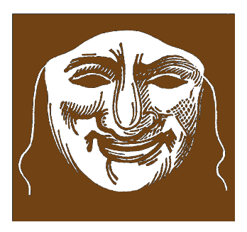

Persona: The Mask You Think You Are
The face we show to the world isn't always our real self...

The Other Person as a Mirror
Everyone has had the experience: an unexplainable dislike toward someone we barely know...

The True Purpose of a Relationship
Why do we seek relationships? Beyond biological drives or emotional fulfillment, ...

Loneliness vs. Solitude: A Jungian Perspective
Escaping loneliness is currently one of society’s prevailing themes. Anyone who lives alone or remains single is generally considered unhappy ...
The Red Book: Carl Jung’s Inner Epic
The Red Book is Carl Jung’s monumental inner journey — a handwritten, illustrated manuscript created during a period of deliberate solitude...
Your Fate: The Secret Power Guiding Your Life
Fate or destiny are notions everyone is familiar with. They are of ancient origin, defining the mysterious plan behind the events of our lives, ...
✦ ✦ ✦